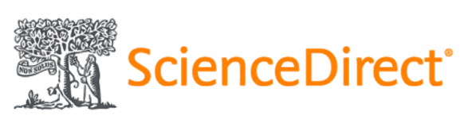
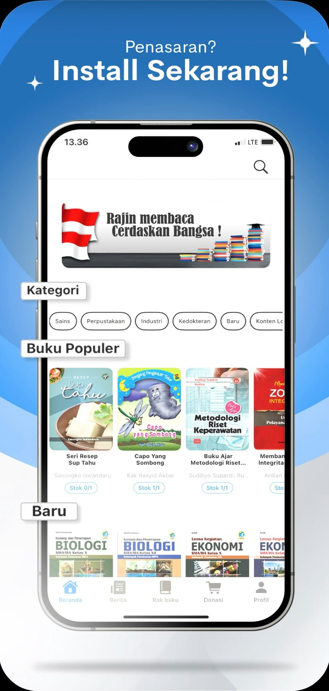

Perpustakaan Dalam Genggaman
Akses ribuan koleksi e-book, jurnal digital, dan fitur sirkulasi mandiri langsung dari smartphone Anda. Membaca dan belajar jadi lebih mudah di mana saja dan kapan saja.

Selamat Datang di Perpustakaan ITSB
Online Public Access Catalog (OPAC) adalah sistem katalog atau fasilitas pencarian untuk mempercepat penemuan data katalog yang dapat diakses pengguna untuk mengakses bahan perpustakaan digital dan referensi online lainnya.
Akses KatalogRepository ITSB merupakan repositori institusi yang memiliki tujuan untuk melestarikan dan mempublikasikan karya tulis ilmiah yang dihasilkan oleh mahasiswa dan dosen ITSB serta memastikan karya tulis ilmiah tersebut dapat diakses terus dan mudah.
Buka RepositoryPerpustakaan Institut Teknologi Sains Bandung (ITSB) dan Perpustakaan Nasional RI menyediakan berbagai bahan perpustakaan digital online (e-Resources) seperti jurnal, ebook, dan karya-karya referensi online lainnya.
Jelajahi E-ResourcesLayanan berbasis kecerdasan buatan (Ai) untuk mendukung pengelolaan dan penyebaran informasi publikasi ilmiah. Sebagai pusat data terintegrasi yang mencatat, memverifikasi, menganalisis, dan menyajikan informasi terkait jurnal ilmiah yang diterbitkan oleh sivitas akademika.
Jelajahi Ai JOUINKoleksi Tercetak
Koleksi Non Cetak
Pemustaka
Perpustakaan

SCIENCE DIRECTInfografis ini menyoroti bagaimana kebiasaan belajar sehari-hari dapat membantu meningkatkan kemampuan berbicara bahasa Inggris. Penelitian yang dilakukan oleh Puthut Ardianto dan Andika Fitrah Nurcahya dari...
READ MORE »Hari Keluarga – Perpustakaan Institut Teknologi Sains Bandung (ITSB) menyelenggarakan webinar Hari Keluarga 2026 bertema "Financial Resilience & Mental Well-being di Era Disrupsi Geopolitik" pada Jumat,...
READ MORE »Perpustakaan ITSB kembali menyelenggarakan webinar literasi informasi melalui program IQRA #21 dengan tema "From Reading to Visual: Mengubah Literatur jadi Konten yang...
READ MORE »Akses ribuan koleksi e-book, jurnal digital, dan fitur sirkulasi mandiri langsung dari smartphone Anda. Membaca dan belajar jadi lebih mudah di mana saja dan kapan saja.

Prosedur bebas pustaka dapat diakses melalui menu Download lalu pilih Panduan Perpustakaan ITSB
Denda keterlambatan dihitung per hari kerja sesuai tarif peraturan akademik yang berlaku untuk tiap eksemplar buku.
Durasi standar peminjaman buku sirkulasi untuk mahasiswa adalah 7 hingga 14 hari tergantung rumpun koleksi.
Perpanjangan dapat dilakukan mandiri secara daring melalui area login akun sirkulasi sebelum masa pinjam berakhir.
Silakan mendaftar secara periodik lewat formulir tautan yang disediakan di beranda pengumuman utama situs.
Akses teks lengkap skripsi/tugas akhir dibatasi menggunakan login akun lokal institusi via jaringan repositori internal.
Gunakan kredensial akun portal mahasiswa tunggal terintegrasi (SSO) aktif Anda.
Akses luar kampus wajib memanfaatkan konfigurasi koneksi jaringan proksi (Proxy) atau akun akses jarak jauh spesifik.
Ya, menerima kunjungan umum/eksternal untuk referensi di tempat dengan mengikuti aturan registrasi tamu khusus.
Layanan sirkulasi peminjaman luar rumah hanya disediakan eksklusif bagi pemegang kartu anggota aktif civitas akademika.